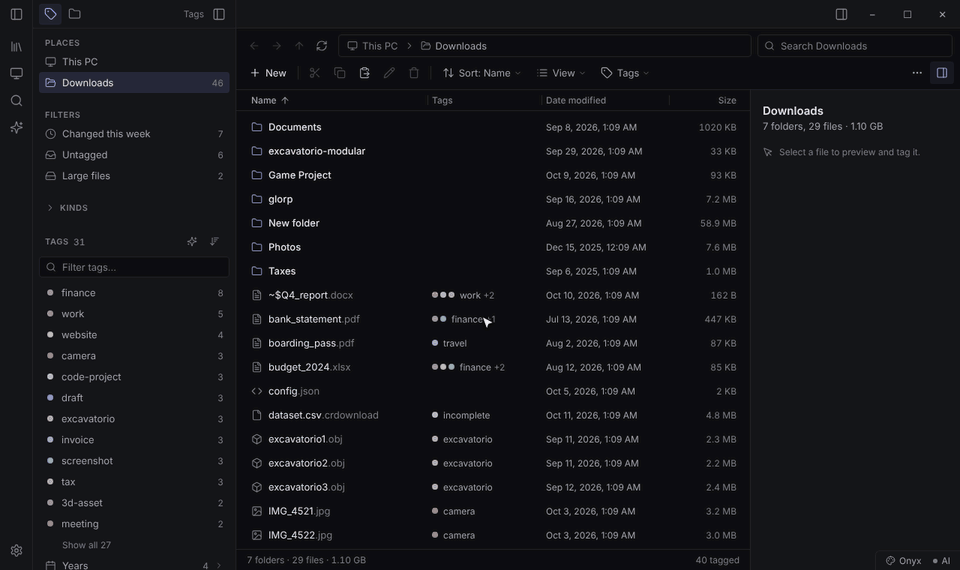

A file organizer that asks before it moves anything.
Onyx plans a clean folder structure for a messy folder, shows you every move before it happens, and puts everything back with one click if you change your mind.
Free for personal use · Windows 10 and 11 · no installer

Plan, review, apply, undo
Understands what things are
It reads names and the folders you already have, so invoices land in Finance and photos join your existing Photos folder. Projects and apps stay together.
Nothing moves without you
Every move is listed before anything happens. Nothing is ever overwritten, and one click restores everything, even after a restart.
AI that can stay on your PC
Use offline rules, an online AI, or a model running on your own computer with Ollama, so your file names never leave it.
A better file explorer
Tags, previews for pictures, PDFs, video and text, Ctrl+K quick find, and the File Explorer shortcuts you already know.